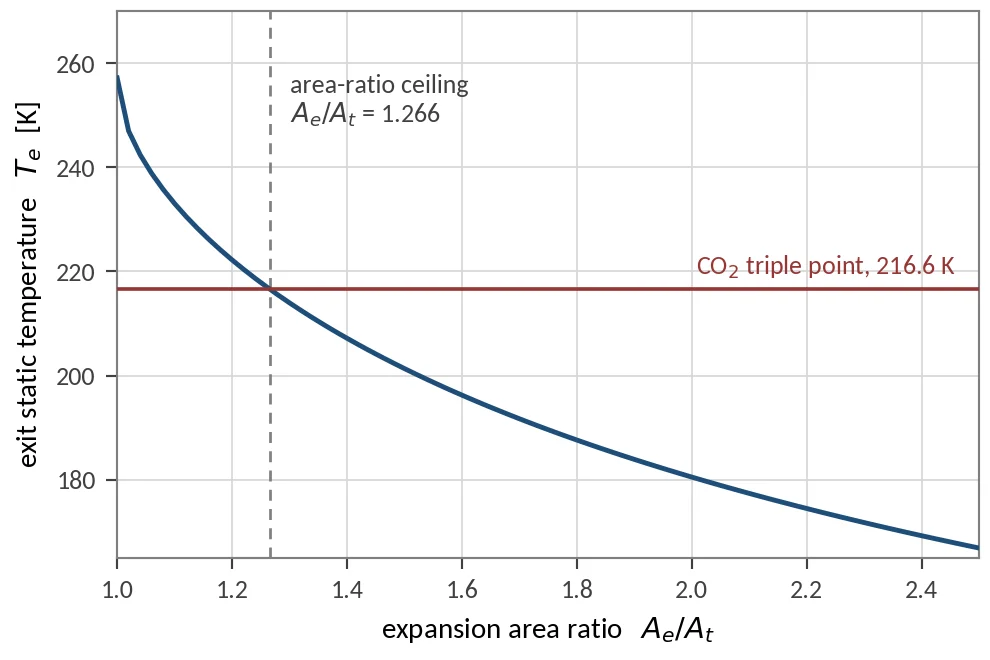
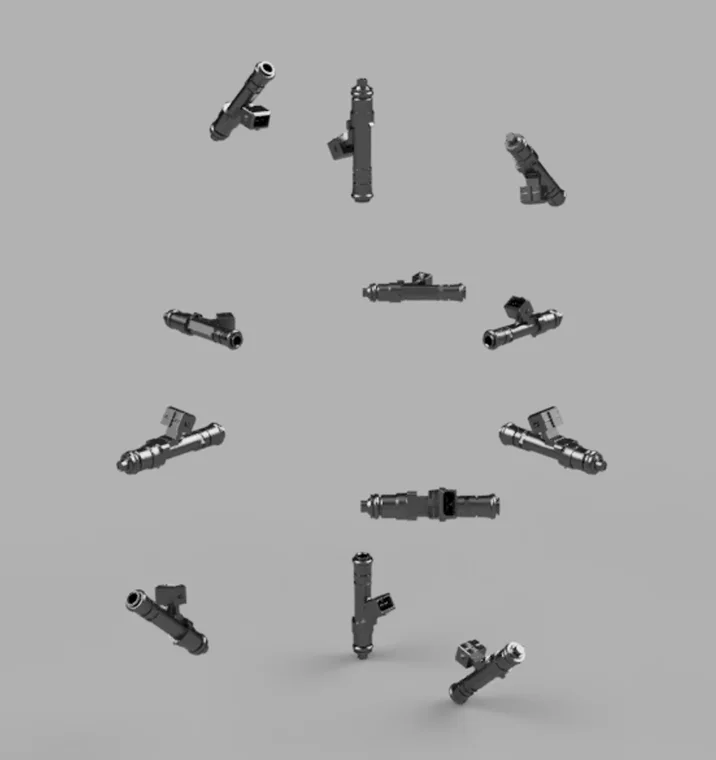
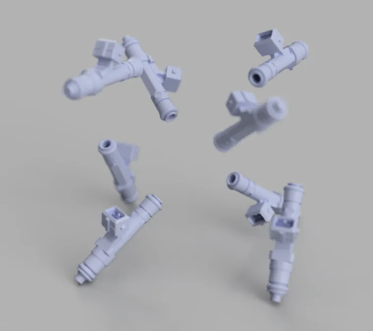
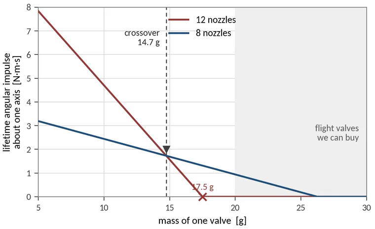
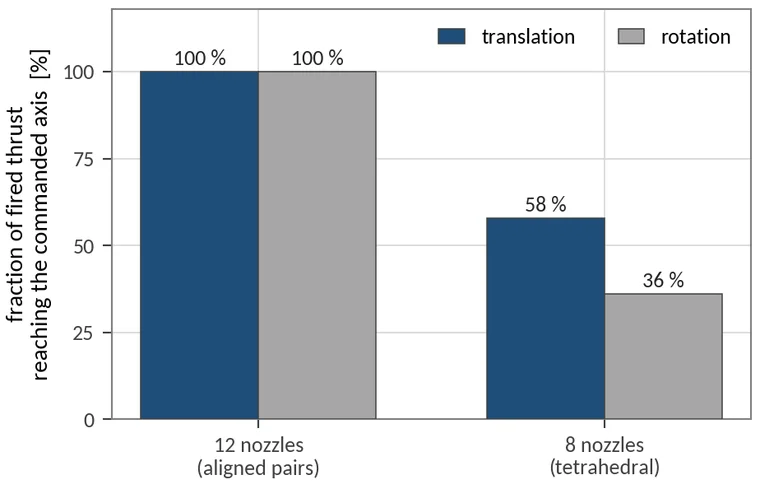
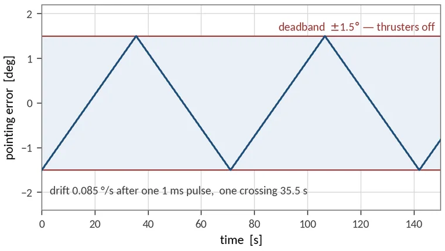
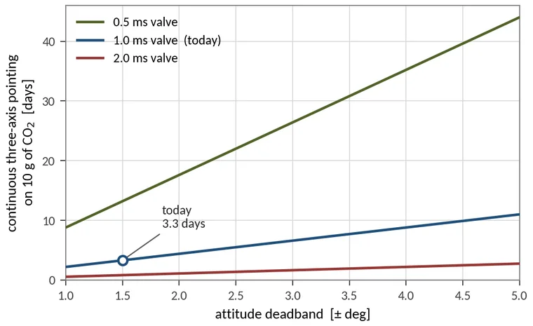
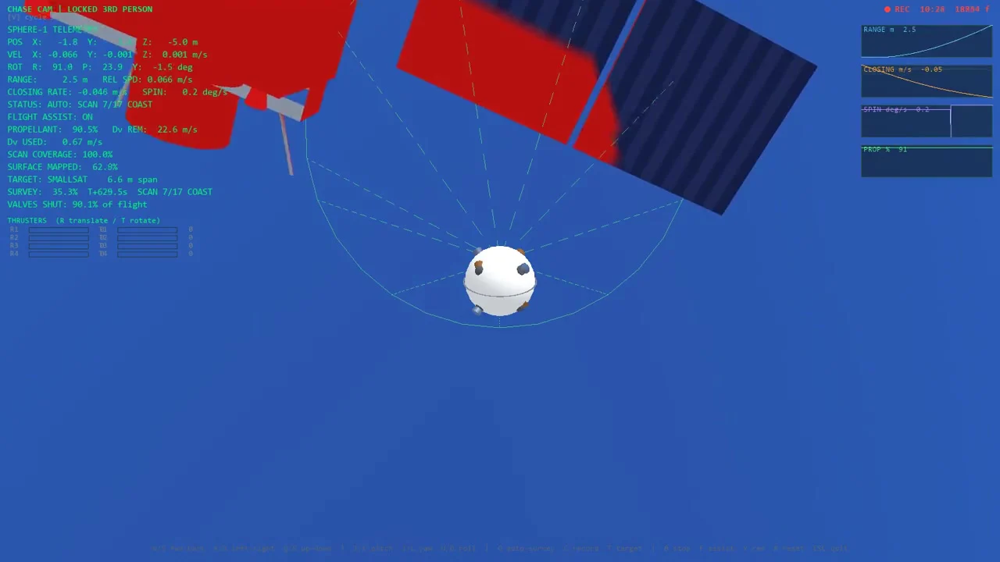
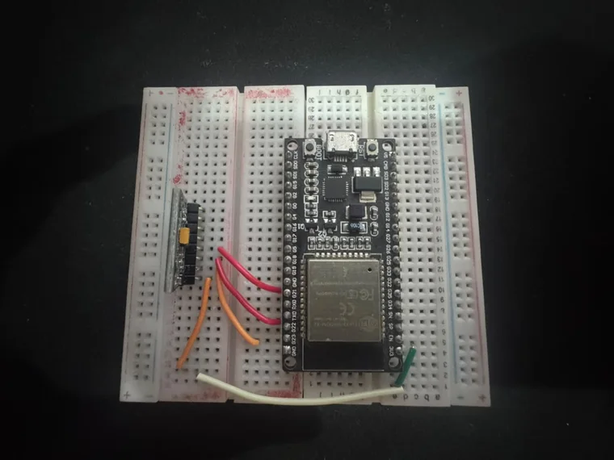
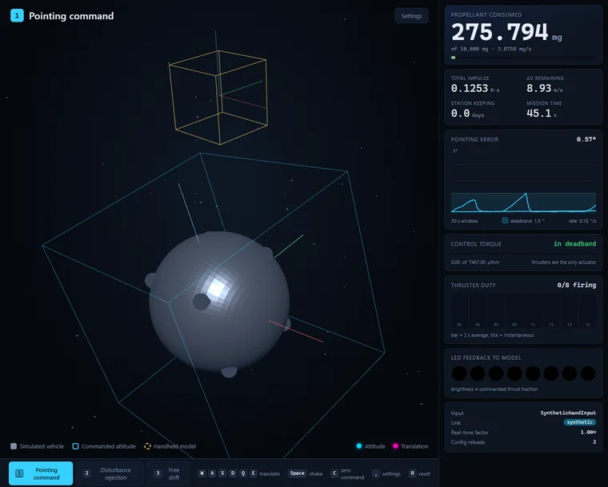

A spacecraft cannot look at itself.
After the Columbia accident, the Shuttle flew every mission with a 50-foot sensor boom and performed a pitch manoeuvre under the Space Station so its heat shield could be photographed. Both are workarounds for one missing function: a camera that can leave the vehicle and look back at it. Sphere-1 is a study of the smallest vehicle that could do that. It has to leave no contamination on the surface it inspects, be small enough to be a payload and not a mission, and hold its pointing for a useful time on very little gas.
The gas decides the shape of the nozzle.
Carbon dioxide stores as a liquid at about 57 bar, so the tank is light, but it deposits as a solid below its triple point of 216.6 K. Holding the nozzle exit above that temperature caps the exit Mach number at 1.589 and the expansion area ratio at 1.266. At the 0.80 mm flight throat, the divergent cone that ratio allows would be 0.18 mm long, so the nozzle is converging only. That costs 4.5 % of specific impulse and gives a part that can be machined repeatably.

Eight thrusters, because valves are heavy.
Six-axis control with push-only thrusters needs at least seven. Twelve decouple cleanly, but twelve valves at 25 g each put the vehicle 90 g over budget before any propellant is loaded. Seven have no opposing pairs, so every translation carries an unwanted torque. Eight, as four radial and four canted nozzles, recover the decoupling of twelve within the mass budget. Compared on angular impulse over the life of the tank, eight wins for any valve heavier than 14.7 g, and the lightest flight solenoid available weighs 20 g.




Ten grams of gas lasts for days.
One nozzle held open empties the tank in 48 seconds. The same ten grams hold three-axis pointing inside a ±1.5° limit cycle for 3.3 days, a factor of about 5,900. The burn rate scales with the square of the valve opening time, so halving it from 1.0 ms to 0.5 ms quadruples the mission life at no cost in mass. The redundancy of eight nozzles is resolved in closed form by the control allocator, at 200 Hz.


Straight lines cost less gas than circles.
Holding a curved path in vacuum needs continuous thrust towards the centre, while a straight leg costs only a burn to start and a burn to stop. Re-planning the survey as straight ballistic legs cut the propellant for one complete pass from 73 % of the tank to 24 %, with coverage almost unchanged at 98.7 % against 99.1 %.

Tested on a real flight computer.
The flight controller runs on an ESP32 at 200 Hz, reads a real inertial measurement unit and drives the simulated vehicle. Adding gyro-rate feedforward cut the mean attitude tracking lag from 11° to 1.2°, on a rig that cost under $50. The controller, processor, sensor and rate are real; the valves are modelled, not driven.


What is still unproven.
The report lists twelve known weaknesses with their consequences. The most important is that every thrust and torque figure scales with the injector's effective flow area, which is still a datasheet value. The roadmap is therefore: measure that flow area on a flow bench, measure the real inertia on a bifilar pendulum, then retune the controller and close the loop on the physical vehicle.